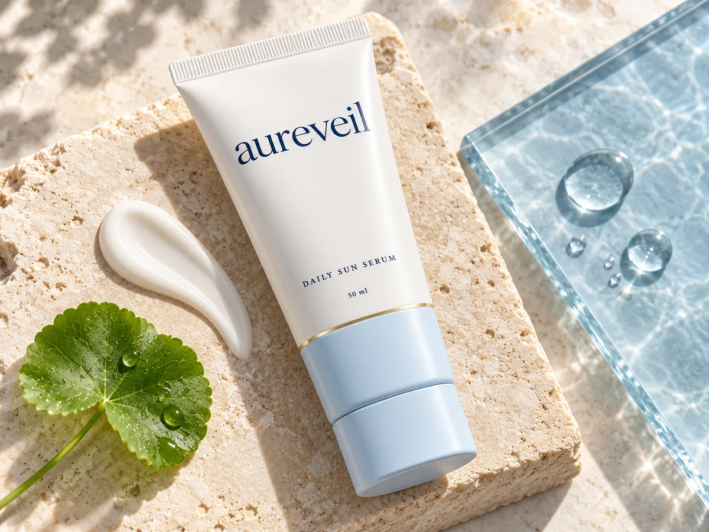

FIRST APPLICATION
Feel and finish
Discover texture, easy spreadability and the dewy finish. Introduce new skincare thoughtfully and notice how your skin feels.
Care with clarity
Understand the feel, finish and purpose of your daily essentials.
Results need a timescale
Discover comfort and finish, then make room for a consistent daily sun-protection habit.
FIRST APPLICATION
Discover texture, easy spreadability and the dewy finish. Introduce new skincare thoughtfully and notice how your skin feels.
FIRST 7–10 DAYS
Use a small-area test as directed before full use. Keep track of comfort while finding a place for sunscreen in your morning.
MONTHS
Published SPF30 research followed 32 participants, assessing skin appearance from week 12 through week 52. Read its methods and results.
YEARS
Skin-aging prevention is a long-term habit. Explore the 4.5-year research context and keep using shade and protective clothing.
WHEN YOU APPLY
Discover the sunscreen’s serum-like texture and the mist’s fine spray. Both are described with a dewy finish.
Explore the application guideAS YOU GO ABOUT YOUR DAY
Sun Serum is the labelled UV-protection step. Cloud Mist brings hydration and a refreshing moment.
See the ingredient rolesAS THE ROUTINE BECOMES YOURS
Pay attention to comfort and how the steps fit your day. Introduce new skincare thoughtfully and keep following the product directions.
Find your skin fitSeven days. A little more intention.
A routine-building guide, at your own pace.
Meet the label. Check ingredients and directions.
Introduce a new product carefully. Keep track of how comfortable it feels.
Find the point in your day where care can become a habit.
Consider what fits. Continue a small-area test for the recommended duration before introducing a new product fully.
Make a little room for daily care and keep following the product directions. Read about introducing new skincare (opens in a new tab).

A clearer kind of confidence
Discover a fresh, dewy finish and a lightweight texture that makes room for daily care. Customers describe easy absorption and comfortable hydration. Explore their experiences and find the finish you enjoy.
For sun protection, application and reapplication matter. Make sunscreen one part of a routine that also includes shade and protective clothing.
Make your next step a comfortable one.